Nước là nhu cầu số một và cũng là chìa khoá của sự sống và sự mưu sinh ở nơi hoang dã. Cơ thể của chúng ta chứa 75% nước, nhưng cũng rất dễ mất nước qua hệ bài tiết, cho nên chúng ta phải kịp thời bổ sung số lượng nước đã mất, nếu không cơ thể sẽ suy kiệt nước, và nguy đến tính mạng. Người ta có thể nhịn đói hàng tuần nhưng không thể nhịn khát vài ngày…
Khi cần di chuyển để tìm đường thoát thân, chúng ta càng phải biết dè sẻn nước uống, dù khát đến đâu thì cũng chỉ nên nhấp từng ngụm nhỏ cho đỡ khát mà không nên tu ừng ực, vì trước mắt, chưa chắc chúng ta đã tìm thấy nước. Hơn nữa, khi đang mệt, uống nước nhiều sẽ lả người, có thể dẫn đến ngất xỉu.
Trong cuộc sống nơi hoang dã, việc tìm ra nước là một vấn đề cấp bách, khẩn thiết và sinh tử, cho nên các bạn bằng mọi cách, phải kiếm cho ra nguồn nước.
TÌM NGUỒN NƯỚC & MẠCH NƯỚC
Ngoài những nơi mà chúng ta có thể tìm thấy nước dễ dàng như: Sông, suối, ao, hồ, mương, lạch, giếng, mạch nước… Chúng ta còn có thể tìm thấy nước ở những nơi như:
- Dọc theo bờ biển hoặc bờ hồ nước mặn, các bạn đào một lỗ ở nơi vùng đất trũng, cách bờ khoảng 30 mét. Hoặc sau một đụn cát đầu tiên, nếu thấy nơi đó có cỏ mọc hay đất ẩm ướt, hy vọng có nước ngọt hay nước có thể uống được.
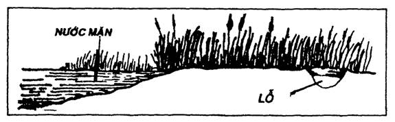
Đào lỗ ở những vùng nầy, các bạn nên chú ý: Khi đến lớp cát ẩm, các bạn phải ngưng đào để cho nước rỉ ra từ từ, không nên đào sâu nữa, vì sẽ gặp nước mặn.
- Đi lần theo những con sông, suối khô cạn, tìm dưới những lớp đá chồng chất ở những khúc quanh của lòng sông hoặc bờ sông. Hay đào những hố nhỏ nơi có cát ẩm ướt. Vì ở đây có thể ẩn chứa những mạch nước.
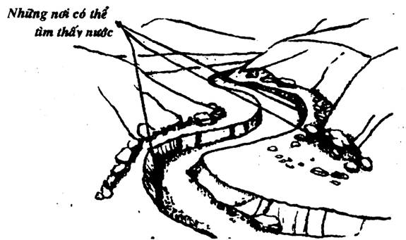
- Đi ngược về nguồn sống, suối cạn, ở đó có thể còn những mạch nước rỉ hay đất ẩm chứa nước.
- Đào lỗ ở vùng trũng thấp, giữa những đồi cát, nơi có cỏ xanh hoặc đất ẩm.
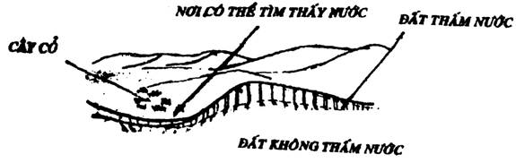
- Các bạn cũng có thể tìm thấy những vũng nhỏ chứa nước ở các khe mương, sau các tảng đá lớn, dưới chân các vách núi… Những vũng nầy không thấm xuống đất, vì nó nằm trên một lớp đá hay đất sét nhão. Cũng ít bị bốc hơi vì được che khuất ánh nắng mặt trời.
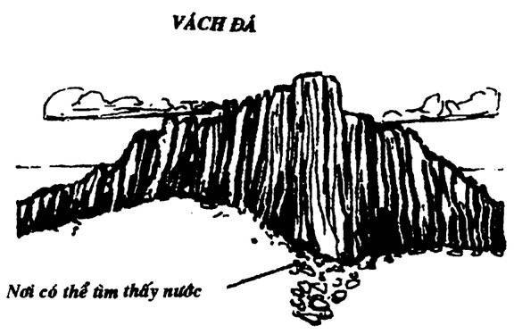
- Đào một lỗ nhỏ ở khu vực sình lầy hay đá ẩm ướt, sâu khoảng từ 3 – 6cm, chỗ đất mềm. Nước sẽ từ từ rỉ ra trong hố. Nước nầy có thể lọc để dùng.
Nếu chỉ có cát ướt hay bùn nhão thì các bạn dùng một miếng vải sạch hay áo sạch, bỏ vào trong đó, túm lại rồi vặn xoắn mạnh, nước sẽ chảy ra.
Nước «sản xuất» theo kiểu nầy thường không được trong sạch, cần phải lọc và khử trùng trước khi sử dụng.
- Các bạn còn có thể tìm thấy nước mưa đọng lại từ trong các hốc cây đại thụ, hoặc trong các lóng tre bị mắt kiến (tre bị kiến đục mắt). Nếu lắc mà nghe tiếng óc ách, thì khía phía dưới từng lóng tre để hứng nước. Ta thường gặp ở những cây tre bánh tẻ (không quá già hoặc quá non) cũng chứa nước.
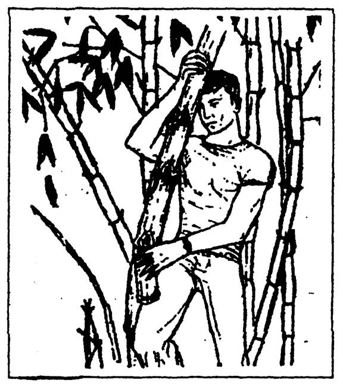
NGƯNG TỤ HƠI NƯỚC:
Phương pháp thứ nhất:
Đào một cái hố hình phểu, đường kính khoảng một mét, sâu cũng khoảng một mét, ở những khu vực ẩm ướt. Đặt ở dưới đáy hố một vật dụng đựng nước (ton, tô, chén…) rồi phủ lên trên miệng hố một tấm nylon sạch và trong suốt, dằn đất, đá cho kín chung quanh mép, ở giữa bỏ một cục đá làm cho tấm nylon thụng xuống ngay ở miệng vật chứa nước. Sức nóng của mặt trời làm cho đất ẩm bốc hơi, đọng lại dưới tấm nylon, chảy dài xuống và nhỏ vào vật chứa nước để dưới đáy hố.
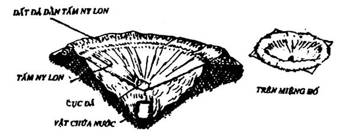
Các bạn có thể áp dụng phương pháp nầy ở những vùng hoang mạc khô cằn, nhưng trước đó, các bạn phải lót một số thân cây mọng nước đã được chặt nhỏ (như xương rồng, sống đời…)
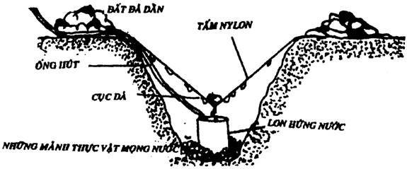
Hoặc những cành lá còn xanh tươi xuống đáy hố để tạo ẩm. Nếu có thể thì dùng một ống nylon hay ống trúc thông mắt, để cắm một đầu vào vật đựng nước, một đầu ra khỏi miệng hố, khi cần thì có thể hút nước qua ống mà không phải mở tấm đậy lên.
Nước được «sản xuất» theo kiểu nầy rất tinh khiết.
Phương pháp thứ hai:
Các bạn tìm một bụi cây thấp, thật nhiều lá xanh. Đào một cái hố chứa nước nhỏ gần gốc cây, chỗ thấp nhất. Lót một tấm nylon xuống lỗ và chung quanh gốc cây với một độ nghiêng tập trung vào hố.
Trùm một tấm nylon khác trong suốt và sạch, lên bụi cây, dằn kín.
Dưới ánh mặt trời, lá cây sẽ bốc hơi, ngưng tụ dưới bề mặt tấm nylon, rồi chảy về phía hố tích lũy. Nước nầy cũng tinh khiết, có thể dùng ngay.
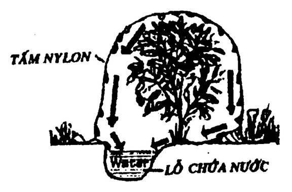
LẤY NƯỚC TỪ SƯƠNG MÙ
Đây là một phương pháp lấy nước mới nhất do các kỹ sư của Canada và Chile phối hợp nghiên cứu. Họ đặt ở sa mạc Atacama phía Bắc Chili, 75 mảnh lưới bằng Polystyrene, mỗi mảnh rộng 12m x 4m. Những mắc lưới đó đã thu những giọt nhỏ của sương mù góp lại thành những giọt nước. Nó chảy tự nhiên vào một cái máng ở dưới những mảnh lưới, rồi theo những ống dẫn, đổ vào bể chứa. Mỗi mét vuông lưới thu được trung bình từ 3 đến 4 lít nước một ngày (?), đủ để cung cấp cho một làng chài trong vùng Chungungo.
Những đề án tương tự cũng đang được thực hiện trong vùng núi khô cằn ở Pérou, Equateur, Kenya, Ấn Độ, Yémen và Philippine. (Science et Vie. 1/94)
QUAN SÁT & THEO DÕI CÁC ĐỘNG VẬT
Ở trong sa mạc hay những vùng khô cằn, quan sát và theo dõi các động vật, côn trùng là phương pháp giúp chúng ta có thể phát hiện ra những nơi có nước.
- Côn trùng rất phụ thuộc vào nước, chúng chỉ sống ở những nơi mà nước chỉ ở trong tầm bay của chúng (nhất là loài ong). Các bạn hãy theo dõi và quan sát kỹ hướng bay của chúng.
- Các động vật thường đi tìm nước uống vào buổi sáng sớm và lúc chiều tối. Theo dõi tìm kiếm các lối mòn của chúng, vì có khi những con đường mòn nầy chúng đã sử dụng từ rất nhiều năm, dẫn đến những nơi có nước.
- Chim cu rừng thường hay có thói quen đậu trên các cành cây, lùm bụi, ở những nơi gần nước vào mỗi buổi chiều.
- Chim chóc thường bay đến và bay đi từ nơi có nước, ở nơi có nước, chúng bay vòng vòng hoặc tập hợp lại thành đàn lớn.
- Theo dấu chân của bầy voi rừng, chắc chắn sẽ dẫn các bạn đến khu vực có nguồn nước.
Những con chim săn mồi thường sử dụng máu của con mồi như là một loại chất lỏng, nên ít dùng đến nước.
Người Bédouins ở sa mạc Sahara cho rằng: Những con chim bay đến nơi có nước thì bay thấp và bay thẳng, còn những con chim bay từ chỗ có nước về, thì bay nặng nề, đập cánh mạnh mẽ (tiếng vỗ cánh kêu lớn) và thường xuyên đậu lại để nghỉ ngơi.
CHƯNG CẤT NƯỚC
Phương pháp nầy dành cho những người đã có chuẩn bị hay những người tìm được dụng cụ thích hợp. Ở trong những vùng nước mặn, nước bẩn, nước nhiễm phèn…
Nếu các bạn có chuẩn bị sẵn bằng những dụng cụ chưng cất có bán trên thị trường thì rất tốt. Bằng không, nếu kiếm được một số dụng cụ và vật liệu, các bạn có thể tự chế các bình chưng cất nước theo những mẫu đơn giản sau:
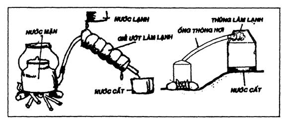
Phương pháp chưng cất nầy dựa theo nguyên lý hơi nước nóng gặp lạnh sẽ đông lại thành nước, cho nên các bạn phải giữ cho phần làm lạnh lúc nào cũng phải «lạnh».
LỌC VÀ KHỬ TRÙNG NƯỚC
Dù có khát đến đâu, các bạn cũng đừng uống nước dơ bẩn hay nước tiểu. Các chất cặn bã ngay trong nước tiểu hay vi khuẩn trong nước dơ thừa sức đốn ngã bạn bằng các bệnh tả, lỵ, thương hàn…
Nếu muốn có nước sạch để sử dụng, các bạn phải biết cách lọc và khử trùng nước đơn giản.
LỌC NƯỚC
1. Bình lọc nước:
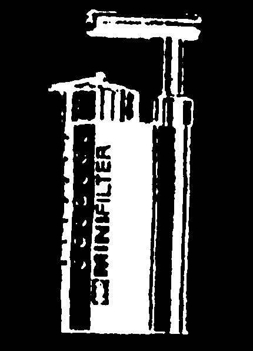
Để chuẩn bị chu đáo cho một chuyến thám hiểm dài ngày, các bạn nên mua những bình lọc và bơm lọc mini dành cho các nhà thể thao, du lịch thám hiểm… rất gọn nhẹ.
Với loại bình lọc nầy, người ta có thể lọc sạch nước bằng phương pháp cơ học đơn giản. Không dùng bất cứ hoá chất nào. Bộ màng lọc nầy có thể ngăn chận tất cả chất bẩn và nấm độc từ các nguồn nước trong thiên nhiên.
Bộ lọc nầy có thể sử dụng trên 1000 lần, mỗi lần lọc một lít nước.
2. Tự chế hệ thống lọc nước:
Ở những nơi hoang dã, các bạn không có đủ vật liệu để chế những hệ thống lọc nước hoàn hảo, nhưng các ban cũng có thể lọc nước với những hệ thống đơn giản như sau:
- Dùng một ống lon đục nhiều lỗ ở đáy (hay một filter cà-phê), đổ cát vào làm bình lọc.
- Dùng một lóng tre hay một đoạn thân cây rỗng, một đầu nhét cỏ, hay một nùi vải (hoặc cả vải lẫn cỏ), đổ cát vào để làm bình lọc nước.
- Các bạn cũng có thể dùng ba mảnh vải để làm thành giàn lọc nước như hình trên. Hai mảnh trên các bạn đựng cát, mảnh dưới cùng, nếu có thể thì đựng than.
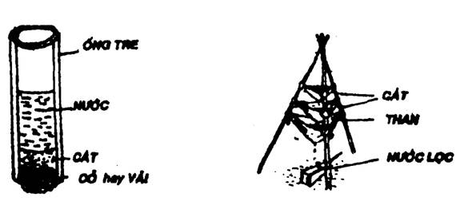
KHỬ TRÙNG NƯỚC
Sau khi lọc xong, các bạn cần phải khử trùng nước trước khi uống. Có nhiều phương pháp khử trùng, nhưng các bạn chỉ chọn những phương pháp khả thi với những gì mà các bạn có trong tay.
- Đun sôi: Đây là phương pháp dễ dàng và hiệu quả nhất, chỉ cần đun sôi nước chừng 5 – 10 phút là có thể triệt tiêu mọi vi khuẩn.
- Dùng thuốc lọc nước (drinking water tablets): Là loại thuốc có bán trên thị trường, ở các nhà thuốc Tây. Tuy nhiên, bạn chỉ có nó khi bạn đã được chuẩn bị từ trước. Bỏ thuốc vào trong nước (theo sự hướng dẫn trong toa thuốc) lắc đều, chừng vài phút sau thì uống được.
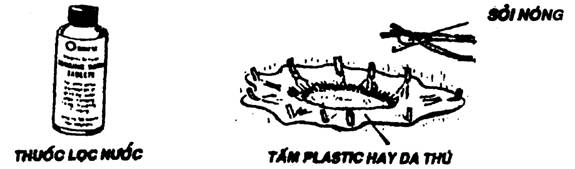
- Nếu không nồi, xoong để đun sôi, các bạn đào một lỗ ở dưới đất, lót một tấm plastic dầy hay một tấm da thú, đóng cọc dằn chung quanh, đổ nước vào.
Đốt một đống sỏi thật nóng, rồi gắp bỏ từ từ vào, cho đến khi nước sôi lên, bỏ vào thêm vài cục than hồng đang cháy để khử mùi.
NƯỚC TỪ THỰC VẬT
Khi không kiếm được nguồn nước tự nhiên như sông, suối, đầm lầy… hay mạch nước, các bạn có thể tìm kiếm nguồn nước từ thực vật. Nhưng dĩ nhiên là không phải cây nào cũng cho chúng ta nước, hay là nước cây nào cũng uống được, cho nên các bạn phải cẩn thận, chỉ sử dụng những cây mà mình đã biết khá rõ.
Dây leo
Hầu như tất cả các loại dây leo trong thiên nhiên đều chứa nước, nhất là các loại dây leo thân mềm. Tuy nhiên trước khi sử dụng, các bạn cũng phải biết rõ tính chất loại dây leo đó.
Để lấy nước, các bạn chặt xiên mũi mác ở phần gốc, gần mặt đất. Kê bình chứa vào để hứng nước. Sau đó với lên, hoặc leo lên một đoạn, chặt mở miệng một vết sâu hơn phân nửa dây leo, nước sẽ từ từ chảy vào bình.
Các bạn cũng có thể chặt đứt hẳn một đoạn dây leo dài khoảng 1 mét (chặt gốc trước ngọn sau). Cầm dựng thẳng lên, kê phần gốc vào miệng, nước sẽ chảy từ từ xuống. Khi hết nước, các bạn chặt một đoạn khác.
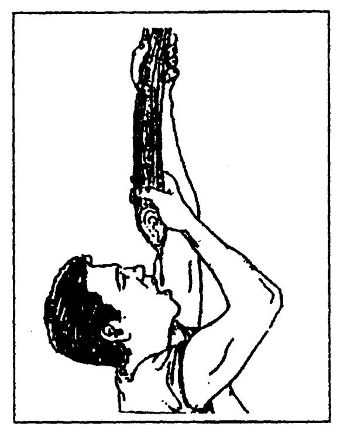
Các loại nước ở dây leo có những mùi vị khác nhau, có khi gây ngứa cổ, cần phải nếm thử, nhưng hầu hết là tinh khiết.
Cây chuối
Là một loại cây mọc hoang và được trồng rất nhiều ở những vùng nhiệt đới để lấy trái ăn. Người ta còn dùng là để gói đồ, thân (bẹ) xẻ nhỏ phơi khô để làm dây cột.
Muốn có nước, các bạn chặt ngang thân chuối, cách mặt đất chừng 1 gang tay (20cm). Khoét một lỗ hình chén ở giữa, sâu xuống cho đến phần gốc (củ). Chừa bẹ chung quanh vừa đủ dầy để giữ nước. Khoảng một giờ thì nước trào lên, các bạn múc đổ vào bình chứa nước, và cứ tiếp tục như thế cho đến khi kiệt nước.
Mỗi gốc chuối làm như thế, có thể cho ta nước từ 4 – 5 ngày.
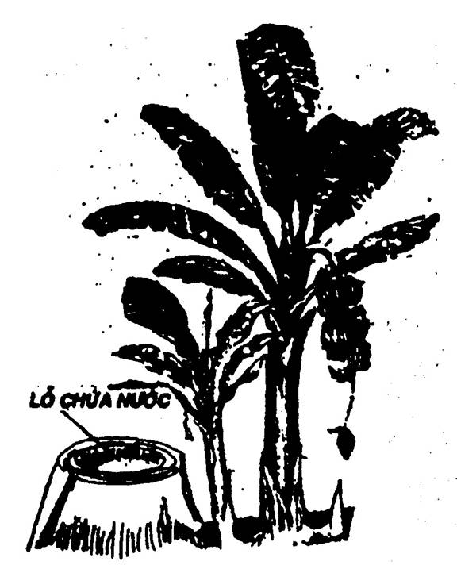
Cây dừa
Được trồng và mọc hoang ở nhiều nơi trong những vùng nhiệt đới, gần bờ biển hay các hải đảo…
Nếu chúng ta đi lạc vào một vùng có cây dừa, thì sự sống của chúng ta khá an toàn. Vì từ cây dừa, nó sẽ cho chúng ta những sản phẩm như:
- Nước dừa: Chứa rất nhiều axit amin, axit hữu cơ… là một loại nước giải khát hảo hạng.
- Cùi dừa: Có chứa 65% chất béo, 20% gluxit, 8% protit, 4% nước. Là một loại thực phẩm rất tốt.
- Gáo dừa: Dùng làm đồ đựng thay tô, chén, gáo múc nước… và làm chất đốt.
- Lá dừa: Dùng để lợp nhà, làm vách chắn, chất đốt…
- Gân lá dừa: Bện hay bó lại để làm chổi, làm tăm xỉa răng, đan rổ rá…
- Xơ dừa: Bện dây thừng, làm thảm chùi chân, chất đốt…
- Đọt non dừa (Củ hủ): Là một loại thực phẩm cao cấp, có thể ăn sống, luộc, xào, nấu…
- Thân cây dừa: Dùng làm cột nhà, làm cầu, thủ công và các tiện nghi khác.
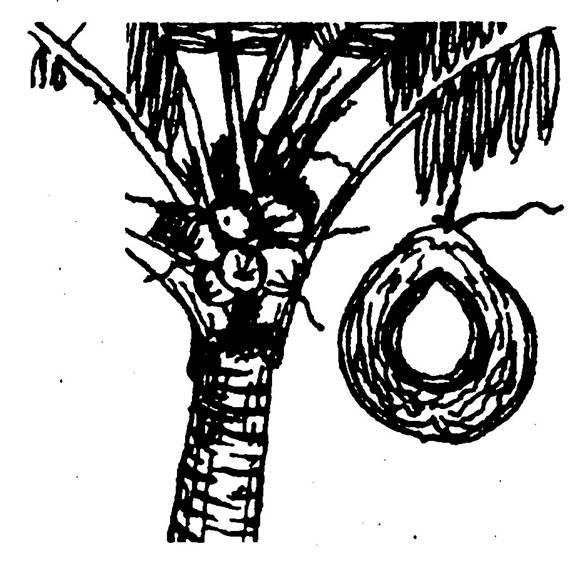
Trường hợp gặp cây dừa mới ra hoa, mà chúng ta thì rất cần nước. Hãy níu cuống hoa cho cong xuống (có thể dùng dây để trì giữ lại), và cắt chỗ giáp cuống với buồng hoa. Dùng bao nylon chụp lại để hứng nước. (Đừng để không khí tiếp xúc nhiều với vết cắt, nếu không, thì cứ 12 giờ lại phải cắt thêm một lát mỏng, vì váng đã đóng bít các lỗ hỗng dẫn nước.)
Với cách nầy, mỗi cây dừa sẽ cho các bạn 1 lít nước trong một ngày đêm.
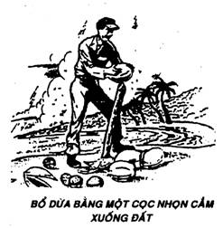
Cây thốt nốt
Được trồng nhiều ở những vùng cực Nam Việt Nam, Campuchia, Ấn Độ và một số nước trong vùng nhiệt đới.
Cây thốt nốt được trồng chủ yếu để lấy nước làm nguyên liệu chế biến thành đường và rượu.
Để lấy được nước, người ta cắt một đoạn ở đầu cuống hoa, rồi buộc bao nylon hay ống dẫn nối với bình chứa.
Nếu cắt vào chiều tối và để suốt đêm, các bạn sẽ có khoảng một lít nước có vị ngọt và thơm.
Quả thốt nốt non ăn mát như thạch. Quả già có màu vàng, thơm như mít, nếu giã ra, đem lọc, sẽ cho chúng ta một thứ bột làm bánh ăn rất ngon.
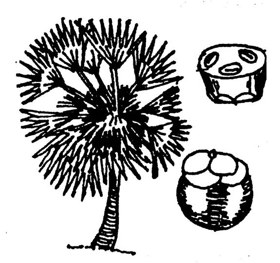
Cây báng
Còn gọi là cây Bụng Báng, là những cây có dạng tương tự như: cây Đoác, cây Kapác, cây Xế, cây Rui, cây Đủng Đỉnh (Đùng Đình)… đều có công dụng giống nhau.
Là những cây mọc hoang, thường được thấy nhiều ở các tỉnh miền Trung và Bắc Việt Nam, và một số nước trong vùng nhiệt đới.
Những cây nầy co thể cho ta nước lấy từ ngọn, tinh bột từ thân cây, đọt non có thể luộc hay nấu canh như các loại rau cải…
Muốn lấy nước, người ta chặt lưu thân (không đứt hẳn) cho cây ngã xuống theo triền núi (làm sao cho phần gốc nằm cao hơn phần ngọn). Bóc hết lá trên ngọn cho đến đọt. Đẽo vạt phần đọt non làm thành máng dần. Trùm bao nylon hay kê đồ để hứng. Trung bình một ngày, một cây có thể cho chúng ta từ 4 – 5 lít nước. Khi lượng nước giảm, các bạn vạt thêm vào khoảng 1 cm, nước sẽ chảy tiếp.
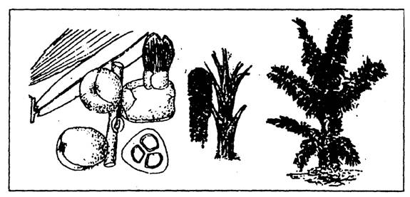
Các bạn lưu ý: Khi chặt cây Đùng Đình (người Bắc gọi là cây Móc), nếu bị vướng vào buồng trái của nó thì rất ngứa phải rất cẩn thận.
Một cây Kapác cao từ 12 – 15 mét, sẽ liên tục cho chúng ta từ 150 – 170 lít nước trong vòng 40 ngày.
Ruột của thân cây đem giã, lọc, sẽ cho chúng ta một loại bột để làm bánh.
Cây dừa nước
Là loại cây thân bẹ thấp, lá như lá dừa, mọc thẳng đứng vươn lên cao. Cây thường mọc ở những vùng đầm lầy ngập mặn, phù sa, nhiễm phèn, ven sông rạch có thuỷ triều lên xuống…
Cây dừa nước mọc rất nhiều ở đồng bằng Nam Bộ, có nơi phát triển thành rừng tự nhiên.
Cây dừa nước cũng cho trái, mỗi buồng dừa có khoảng vài chục trái, kết với nhau thành buồng có dạng khối tròn. Trái dừa nước có cùi dầy, màu trắng đục, có vị hơi ngọt và rất béo, có thể ăn tươi, nấu chè…
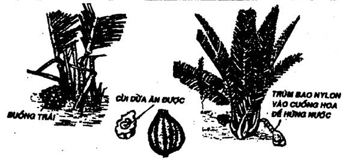
Lá dừa dùng để lợp nhà với hai kiểu lợp: Lá chằm và lá xé, làm chỗ trú mưa nắng rất tốt.
Bập dừa nước dùng để chẻ lạt, gọi là lạt dừa. Nó còn là loại phao nổi tự nhiên dùng để vượt sông.
Nhưng quan trọng nhất là nhựa dừa, được dùng để uống và chế biến thành đường, cồn, rượu, dấm, nước giải khát, bánh kẹo…
Muốn lấy nước thì chúng ta cũng dùng các phương pháp như đối với cây dừa và cây thốt nốt: Cắt đầu cuống hoa còn non, buộc bao nylon hay ống dẫn để hứng nước.
Cây xương rồng
Ở những vùng đất khô cằn hay hoang mạc, người ta thường gặp những cây xương rồng khổng lồ Saguaro (không thấy ở Việt Nam) thân cây chứa rất nhiều nước.
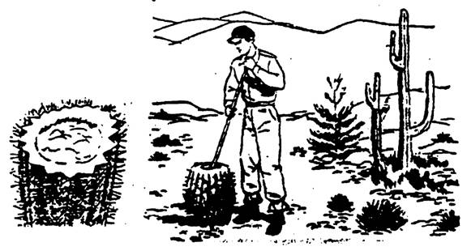
Để lấy nước, người ta lựa những cây thấp, mọng nước (khía căng, không lõm sâu), cắt ngang thân cây, rồi dùng gậy hay tay quậy một lúc ở trong ruột cây, nó sẽ cho chúng ta một chất nhờn tựa như thạch, có thể ăn để đỡ khát.
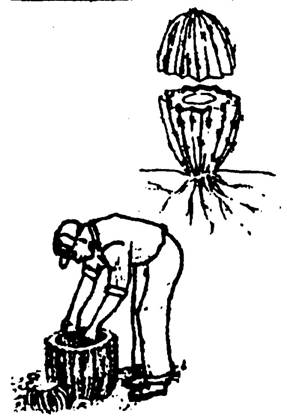
NƯỚC TRONG VÙNG BĂNG TUYẾT
Ở trong những vùng băng tuyết, các bạn có thể lấy nước ở những dòng suối chảy nhanh không kịp đóng băng. Nhưng nếu sông, suối, hồ… đã đóng băng rồi, các bạn tìm những chỗ có tuyết phủ (vì có thể băng ở đây mỏng hơn chỗ khác), dùng rìu băng hay khoan đục thủng một lỗ. Khi đục, nhớ cột dụng cụ vào đầu một sợi dây, đầu kia neo vào đâu đó trên băng, để nếu băng vỡ bất ngờ, các bạn không xẩy tay tuột mất dụng cụ. Ban đêm, để cho lỗ thủng không đóng băng trở lại, các bạn đậy trên lỗ một miếng vải rồi phủ tuyết lên.
Nấu chảy băng tuyết trên lửa cũng là một các tạo ra nước. Các bạn bỏ băng tuyết vào nồi (băng cứng cho nước nhiều hơn tuyết xốp) và nấu trên lửa.
Một cách khác để lấy nước là bỏ băng tuyết vào một cái bao vải sạch, đoạn treo lên cạnh một ngọn lửa. Đặt một cái chậu phía dưới để hứng nước. Sức nóng của ngọn lửa sẽ làm cho tuyết tan ra chảy xuống chậu, và cũng sức nóng đó, giữ cho nước trong chậu không đóng băng.
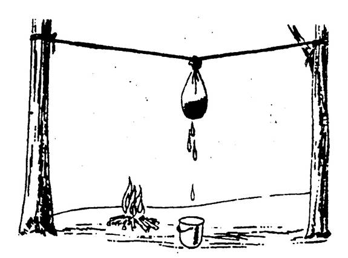
Vào những ngày trời nắng, các bạn lấy một tấm nylon lớn, màu đen, đem trải phủ ở sườn đồi. Rải tuyết lên phân nửa phía trên tấm nhựa, tuyết sẽ tan chảy xuống phần dưới tấm nhựa. Các bạn chỉ việc lấy đồ hứng.
ĐỒ ĐỰNG NƯỚC
Để chứa nước hay đi lấy nước, các bạn phải có một số vật dụng dùng để chứa nước như: can nhựa, thùng, gàu, bình đựng nước…
Nhưng nếu không có, các bạn phải biết tận dụng vật liệu thiên nhiên sẵn có để chế tạo thành những đồ đựng nước như những hình gợi ý dưới đây.
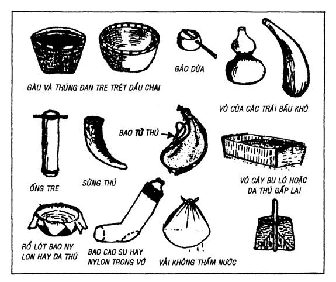